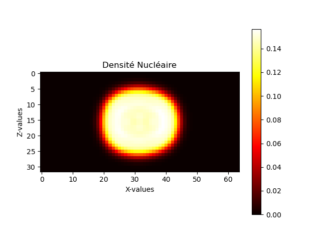
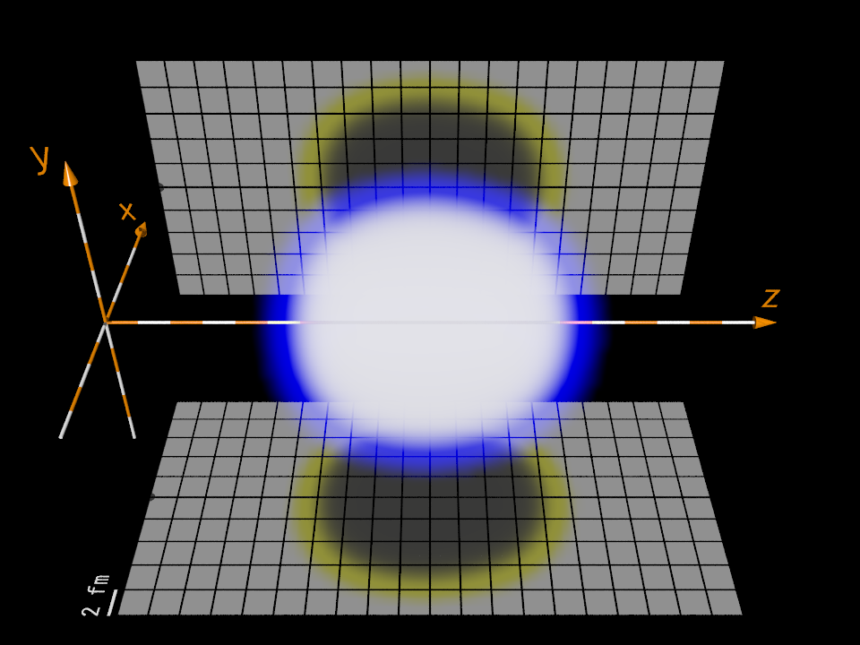

class: titlepage .title[ Introduction à la programmation scientifique ] .subtitle[ `IPS-PROD` - N. Dubray - ENSIIE - 2023 ] .row[ Noé Garreau - Louis Auffret - Basil Foubert ] .footnote[ `IPS-PROD` ] --- # Présentation du projet ##Aperçu d'ensemble du projet ```shell tree -L 1 . ├── AUTHORS #Fichier contributeurs ├── bin #Dossier executables ├── doc #Dossier de documentation ├── Doxyfile #Fichier de configuration de la documentation ├── headers #Fichiers d'entêtes ├── main #Fichier exectuable du projet ├── Makefile #Fichier de gestion de compilation ├── pres #Dossier de présentation visuelle ├── README.md #Fichier de présentation texte ├── src #Dossier de code source └── tests #Dossier des tests ``` ##Code source ```shell src/ ├── hermite.cpp # Calcul des polynômes d'Hermite ├── laguerre.cpp # Calcul des polynômes de Laguerre ├── main.cpp # Calcule la densité nucléaire locale ├── plot.cpp # Traduction des coordonées polaires en cartésiennes, calcul des r_valeurs pour lesquelles affichage du rendu en 3D ├── plot.py # Exportation du graphique 2D matplotlib ├── poly.cpp # Façade pour les polynômes └── basis.cpp # Calcul des nombres quantiques et des fonctions associées ``` ##Librairies utilisées Manipulation de matrices -> Armadillo Gestion des tests -> CxxTests Présentation visuelle -> Remark.js --- #Présentation du projet .vspace[] ##Comment lire la documentation? ```shell firefox pres/index.html & ``` .vspace[] ##Comment lancer les tests? ```shell make test ``` .vspace[] ##Afficher les rendus 2D et 3D ? ```shell $ make 3D $ make 2D ``` ##Afficher la documentation Doxygen ```shell $ doxygen Doxyfile $ firefox ./doc/html/index.html & ``` --- # La Classe `Basis` ### Pour les calculs quantiques en coordonnées cylindriques ## Aperçu - Encapsule les paramètres et fonctions pour définir un ensemble de base. - Calcule les fonctions de base et les valeurs maximales des nombres quantiques. ## Fonctions Clés - `nu(i)`: Calcule la valeur de ν pour un indice i donné. - `calc_mMax()`: Trouve la valeur maximale du nombre quantique m. - `calc_nMax()`: Détermine le vecteur des valeurs maximales de n pour chaque m. - `calc_n_zMax()`: Calcule la matrice des valeurs maximales de n_z pour chaque couple (m, n). ## Composants de Fonction de Base - `zPart(z, nz)`: Évalue la composante Z en coordonnées cylindriques. - `rPart(r, m, n)`: Évalue la composante R en coordonnées cylindriques. - `basisFunc(m, n, n_z, zVals, rVals)`: Calcule la matrice de la fonction de base. --- # Calculs des nombres quantiques On définit : `$$ \nu(i) \equiv (N+2).Q^\frac{2}{3}+\frac{1}{2}-i.Q $$` `$$ m^\textrm{max} \equiv \textrm{sup}\left\{i:\nu(i)\ge 1\right\}. $$` Nombres quantiques définis par : `$$ \begin{alignedat}{4} 0 & \le &&m & \lt & \textrm{ mMax} \equiv m^\textrm{max}\\ 0 & \le &&n & \lt & \textrm{ nMax[m]} \equiv \frac{1}{2}(m^\textrm{max}-m-1) + 1\\ 0 & \le &&n_z& \lt & \textrm{ n\_zMax[m, n]} \equiv \nu(m+2n+1). \end{alignedat} $$` --- `$$ \psi_{m,n,n_z}(r_\perp, \theta, z) \equiv Z(z, n_z) . R(r_\perp, m, n) . e^{im\theta} $$` `$$ Z(z, n_z) \equiv \frac{1}{\sqrt{b_z}} \frac{1}{\sqrt{2^{n_z} \sqrt{\pi}n_z!}} e^{-\frac{z^2}{2b_z^2}}H_{n_z}\left(\frac{z}{b_z}\right) $$` `$$ R(r_\perp, m, n) \equiv \frac{1}{b_{\perp}\sqrt{\pi}} \sqrt{\frac{n!}{(n+|m|)!}} e^{-\frac{r_{\perp}^2}{2b_{\perp}^2}} \left(\frac{r_{\perp}}{b_{\perp}}\right)^{|m|} L_n^{|m|}\left(\frac{r_{\perp}^2}{b_{\perp}^2}\right). $$` --- #Classe basis ```c++ class Basis { private: double br; double bz; int N; double Q; Poly poly; ///< Polynomial object for various calculations within the basis. public: Basis(double br, double bz, int N, double Q); // Accessor methods for the basis parameters. double get_br() const; ///< Get the radial deformation parameter. double get_bz() const; ///< Get the z deformation parameter. int get_N() const; ///< Get the principal quantum number. double get_Q() const; ///< Get the quantum mechanical parameter Q. // Maximum quantum numbers based on the basis truncation scheme. unsigned int mMax; ///< Maximum azimuthal quantum number. arma::ivec nMax; ///< Maximum principal quantum number for each m. arma::imat n_zMax; float nu(int i); unsigned int calc_mMax(); arma::ivec calc_nMax(); arma::imat calc_n_zMax(); arma::vec zPart(arma::vec z, int nz); arma::vec rPart(arma::vec r, int m, int n); arma::mat basisFunc ( int m, int n, int n_z, arma::vec zVals, arma::vec rVals); }; ``` --- # Sortie 2D .subtitle[ Résultat des commandes précedentes ] <p></p> --- # Sortie 3D .subtitle[ Résultat des commandes précedentes ] <p></p> --- # Polynômes d'Hermite .row[ .column.w45.middle[ Classe de calcul des polynômes d'Hermite : `$$ \left\{ \begin{aligned} &H_0 = 1 \\ &H_1 = 2X \\ &\forall n \geq 2, \; H_n = H_1 H_{n-1} - 2(n-1) H_{n-2} \end{aligned} \right. $$` Par récurrence, `$H_n$` est de degré `$n$`. ] .column.w50.middle[ ```c++ class Hermite_compute { public: arma::rowvec range; arma::mat values; void eval(arma::rowvec x, unsigned int n); }; ``` ] ] .row[ .column.w45.middle[] .column.w50.middle[ * constructeur : par défaut * `range` : égal à l'input `x $=(x_0, \ldots, x_{k-1})$` * `values` : `$$\begin{pmatrix} H_0(x_0) & H_0(x_1) & \ldots & H_0(x_{k-1}) \\ H_1(x_0) & H_1(x_1) & \ldots & H_1(x_{k-1}) \\ H_2(x_0) & H_2(x_1) & \ldots & H_2(x_{k-1}) \\ \vdots & \vdots & \vdots & \vdots \\ H_n(x_0) & H_n(x_1) & \ldots & H_n(x_{k-1}) \end{pmatrix}$$` * procédure `eval` : évite les redondances ] ] --- # Polynômes de Laguerre .row[ .column.w50.middle[ Classe de calcul des polynômes de Laguerre : `$$ \left\{ \begin{aligned} &L_0 ^m(\eta)= 1 \\ &L_1 ^m(\eta)= 1 + m - \eta \\ &\forall (m,n) \in \mathbb{N}^2, n > 1, \\ &L_n ^m(\eta) = \left(2 + \frac{m - 1 - \eta}{n} \right) L_{n-1}^m \\ &- \left(1 + \frac{m - 1}{n} \right)L_{n-2}^m(\eta) \end{aligned} \right. $$` ] .column.w50.middle[ ```c++ class Laguerre { private: arma::vec const range; arma::cube values; Laguerre(arma::vec const& x); void eval(unsigned int const& m, unsigned int const& n); arma::vec get(unsigned int const& m, unsigned int const& n) const; bool is_range(arma::vec const& x) const; }; ``` ] ] --- #Classe Plot ```c++ class Plot { public: /* * a standard 2D plot of f : * Plot plt(20e-15, 40e-15, 32, 64); // 20*40 fm centered at (0,0), resolution 32*64 * arma::vec rvals = plt.get_r_values_2D(); * arma::vec zvals = plt.get_z_values(); * arma::mat polar_values = f2(rvals, zvals); * arma::mat plot2D = plt.polar_to_cartesian_2D(polar_values); * plt.write_2D(plot2D, "example.csv"); * * a standard 3D plot of f : * Plot plt(20e-15, 40e-15, 32, 64); // 20*20*40 fm centered at (0,0,0), resolution 32*32*64 * arma::vec rvals = plt.get_r_values_3D(); * arma::vec zvals = plt.get_z_values(); * arma::mat polar_values = f2(rvals, zvals); * arma::cube plot3D = plt.polar_to_cartesian_3D(polar_values); * plt.write_3D(plot2D, "example.df3"); * */ Plot(double const& width, double const& height, unsigned int const& n_points_axis_x_or_y, unsigned int const& n_points_axis_z); arma::vec get_r_values_2D(); arma::vec get_r_values_3D(); arma::vec get_z_values(); arma::mat polar_to_cartesian_2D(arma::mat const& polar_values); arma::cube polar_to_cartesian_3D(arma::mat const& polar_values); static void write_3D(arma::cube const& values, char const* filename); static void write_2D(arma::mat const& values, char const* filename); private: double const width; double const height; unsigned int const nx; unsigned int const nz; }; ``` --- # Optimisations ```c++ arma::mat calcDensityOpti(arma::vec const& rvals, arma::vec const& zvals, Basis& basis){ arma::mat result = arma::zeros(rvals.n_elem, zvals.n_elem); // number of points on r- and z- axes int a = 0; int b = 0; int n_vec = 0; // total number of vectors int* n_vec_per_m = new int[basis.mMax]; // number of vectors for each value of m for (unsigned int m = 0; m < basis.mMax; m++) { n_vec_per_m[m] = 0; for (int n = 0; n < basis.nMax(m); n++) n_vec_per_m[m] += basis.n_zMax(m, n) >= 0 ? basis.n_zMax(m, n) : 0; n_vec += n_vec_per_m[m]; } arma::mat* func = new arma::mat[n_vec]; // pre-computing the basis // [CODE CONDENSÉ] pré-calcul des fonctions basis.basisFunc(triplet i) dans func[i] for (unsigned int m = 0; m < basis.mMax; m++) { int start = a; int next_stop = a + n_vec_per_m[m]; for (; a < next_stop; a++) { for (b = start; b < a; b++) result += func[a] % func[b] * rho(a, b); } } result = 2 * result; for (int i = 0; i < n_vec; i++) { result += func[i] % func[i] * rho(i, i); a++; } delete[] n_vec_per_m; delete[] func; return result; } ``` --- #Benchmarks opti sans flags : 1873 ms, 218 ms, <br> opti avec flags : 162 ms, 16 ms<br> pas opti avec flags : 25259 ms, 2147 ms<br> pas opti sans flags : 60471 ms, 8172 ms<br>